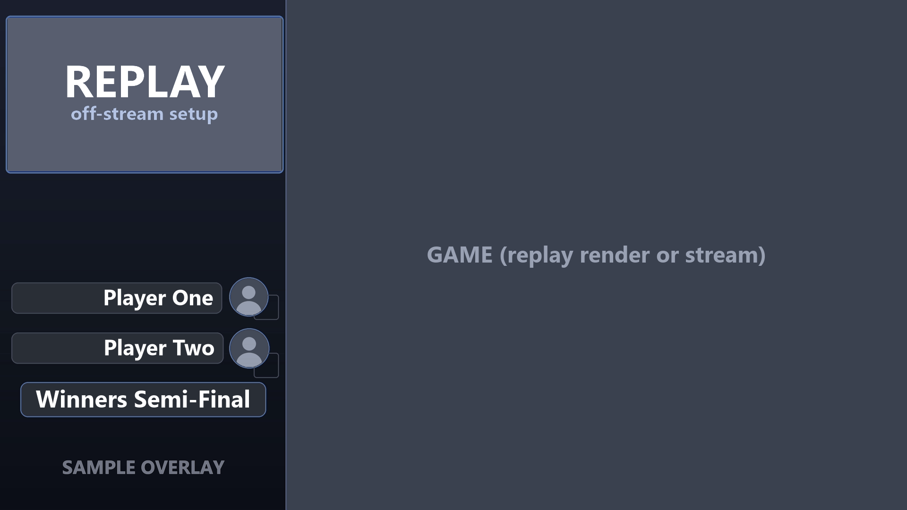
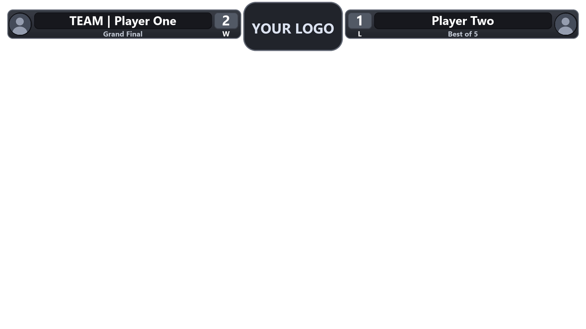

Overlay layout map
What the renderer draws where, and which file or data fills each spot. Both pictures below were made by
the real renderer from the generic sample assets in this package (blank panel, plain pictures, standard
Windows font). Swap in your own art of the same size, or move things with layout.json if your
stream uses a different layout.
★ beta = used at our events but not thoroughly tested yet. Found a bug or something unclear? Open an issue on GitHub (FRjhracing).
a file you provide (sample included)
data filled in per set / game
video: replay render or stream recording
Melee: side panel (rendered sets and stream sets)

| # | Spot | Filled by | Position (1920x1080) / layout.json key |
|---|---|---|---|
| 1 | Side panel background | tools\render\overlays\melee_themes\Default\overlay.png (theme: <Theme>\overlay.png, picked by "season" in vod_config) | scaled to panel_w (607) wide at 0,0. Sample: 1214x2160 (2x) |
| 2 | Webcam box | stream sets: the webcam shows through (keep this area transparent in overlay.png). Rendered sets: a "REPLAY / off-stream setup" card | cam [16, 37, 580, 326] (x, y, w, h); card colours cam_fill, cam_edge, cam_sub |
| 3 | Player names (P1 and P2) | start.gg tag (no sponsor prefix), in the stream font (Default\Typo_Round_Regular_Demo.otf or "font_file"; missing = Segoe UI Bold) | p1.name_right 452, p1.name_cy 631; p2 455 / 737; size name_size 46; right-aligned |
| 4 | Player pictures | start.gg profile picture, circle-cropped; none = default.png (dock assets, else Default\default.png) | p1.pfp [488, 590, 77] (x, y, size); p2.pfp [488, 698, 79] |
| 5 | Stock icons | the character + colour played in that game (from the replay) -> tools\render\docks\melee\assets\stock_icons\<color> <Character>.png. Missing file = no icon (not in the sample) | p1.stock [540, 627, 47]; p2.stock [540, 750, 47] |
| 6 | Round name | start.gg fullRoundText, renamed by the theme's rounds table (theme.json) | round.cx 303, round.cy 846, size round_size 50; centred |
| 7 | Game | off-stream sets: the replay rendered by Dolphin (642x528, scaled); stream sets: the recording; replay_games: the replay over the stream | game_x 607, game_w 1313, full height |
No score is drawn on the Melee panel (the stream overlay has none, and on replay sets it would spoil the result). The stock icon overlaps the picture's lower right, as on the stream.
Ultimate: top scoreboard ★ beta

| # | Spot | Filled by | layout.json key (overlays\ultimate) |
|---|---|---|---|
| 1 | Plates, bars, glow (the empty scoreboard) | frame.png, built by make_frame.py (Pillow) from layout.json + emblem.png | p1.plate / p2.plate, colors, radius, glow |
| 2 | Player pictures | start.gg picture; none = default_pfp.png | pfp [cx, cy, r] |
| 3 | Names | "prefix | tag" from start.gg, shrunk to fit (prefix dropped below 70%), font = first .otf/.ttf in fonts\ (missing = Segoe UI Bold) | name box, text.name_size, keep_prefix, min_scale |
| 4 | Scores | game count, ticking at each results screen found by the video scan; empty when the order of game winners isn't known | score box, text.score_size |
| 5 | Line under the names | P1 side: round; P2 side: "Best of N" | sub box, text.sub_size |
| 6 | W / L marks | grand finals only (winners / losers side; reset = L / L) | mark box |
| 7 | Centre logo | emblem.png (sample: "YOUR LOGO") | logo {cx, top, width} |
Your stream looks different?
- Same pieces, different places (most layouts): copy
examples\melee_layout.example.jsontotools\render\overlays\melee_themes\layout.jsonand change the numbers. Measure them on a 1920x1080 screenshot of your stream (any image editor shows the cursor's x/y). Keys you leave out keep PROTOCOL's values. Put your panel art inDefault\overlay.png, sized topanel_wwide (or a multiple) and 1080 (or the same multiple) high. - Run
python tools\render\make_sample_assets.py --forceto redraw the blank sample panel at your positions: a quick check that text lands inside your bars before you draw the real art. - Game on the left, panel on the right, or no side panel:
game_x/game_wmove the game; a full-width layout with a top bar fits the Ultimate scoreboard style better: itslayout.jsonis entirely data-driven (re-runmake_frame.pyafter editing). - Pieces this renderer doesn't draw (a score on the panel, commentator names, sponsor logos): bake fixed
art into overlay.png; anything that changes per set needs a code change in
tools\python\vod_overlay.py(build_panel), which is a good job for an AI agent. - Check a result without rendering a whole set:
python tools\python\vod_overlay.py "{\"out\": \"test.png\"}"writes one panel.